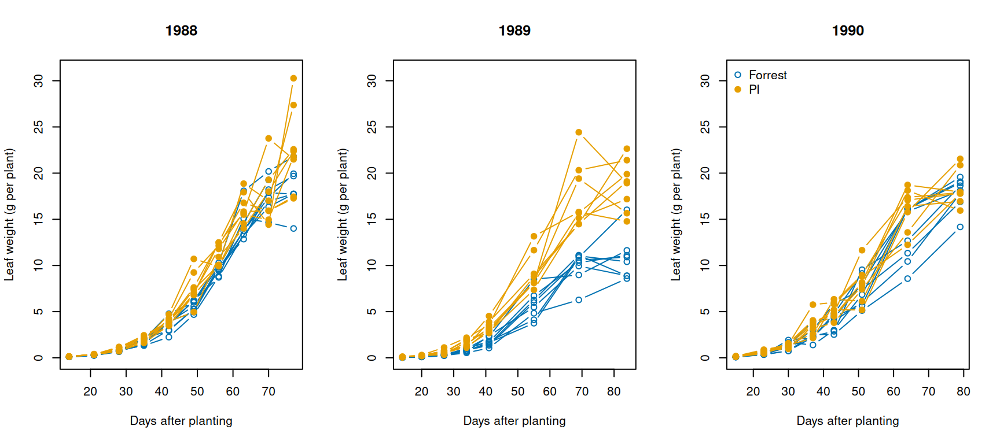
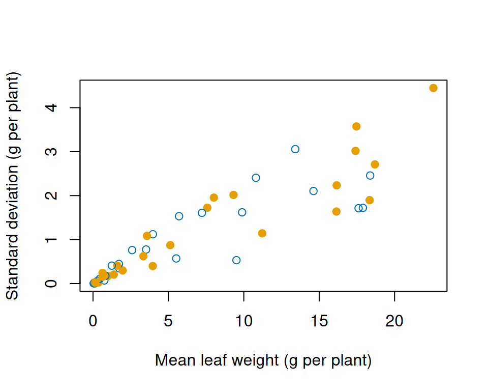
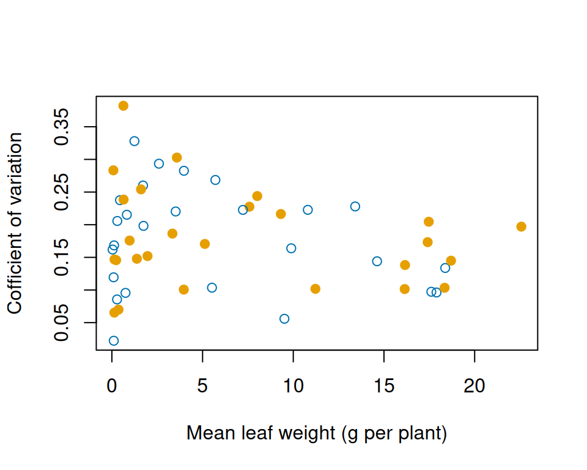
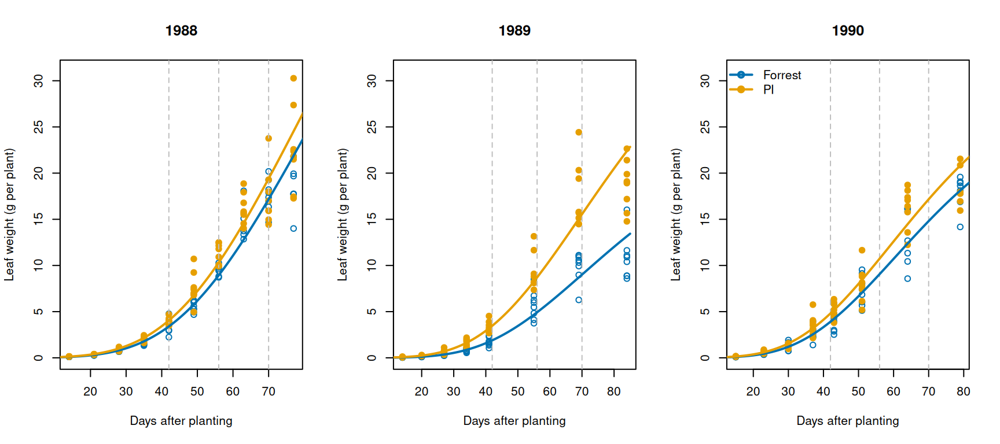
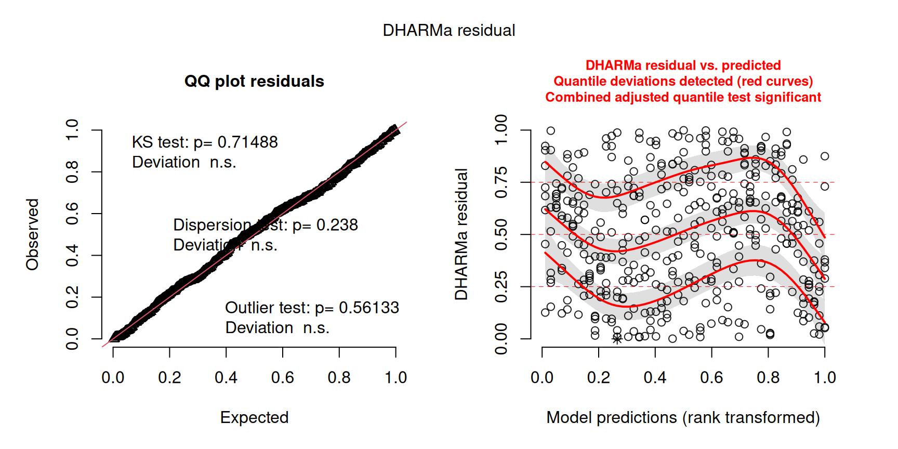

Case study: the leaves of a drought-tolerant soybean
1 Introduction
In this case study, we put Chapters 5 to 7 to work on a single data set, together with the tools of the earlier chapters on which they build. As in Case study 1, we start with an ecological question and a data set, and we pick from the course whatever tools help us answer it. There is no new theory on this page. What is new compared with the first case study is the kind of model: the observations follow a curve over time, they come in groups, and we have to choose the curve, the distribution of the observations around it, the parameters of the curve that vary among groups and the parameters that depend on the experimental factors. Each of these is a decision that can change the answer, and you will see how to make them and how to check whether they matter.
We start with the data and a research question that they can answer, followed by an exploratory data analysis that tells us which curves and distributions are worth trying. From that point onwards we follow the recipe for a grouped response curve at the end of Chapter 7 (write the joint NLL, fit it, compare the candidate models, quantify the uncertainty, check the model), and we finish by comparing our answer with the published analyses of the same data.
2 The data
The data come from a field experiment by Hudak and Patterson, of North Carolina State University, that compared the vegetative growth of two genotypes of soybean (Glycine max): Plant Introduction 416937, an experimental strain that we will call PI, and Forrest, a commonly grown variety that develops at a similar pace.1 The experiment was carried out in 1988, 1989 and 1990 at the Central Crops Research Station near Clayton, North Carolina, with the seeds sown in early June.
In each year, eight plots of 12.2 by 12.2 m were sown with each genotype, 16 plots per year and 48 in total. From emergence until the pods were filling, at intervals of 7 to 14 days, the plants of a randomly chosen stretch of row in each plot were dug up, their leaflets were dried and weighed, and the average dry leaf mass per plant of the plot was recorded (in grams). The stretch of row held 12 plants in 1988 and six in 1989 and 1990.
Hudak and Patterson measured much more (leaf area, the number and size of the leaves, stems and roots), but we will focus only on the leaf mass. These data have been analysed in two books on non-linear mixed models, so it is a bit of a classic.2
Three details of the design matter for our analysis. First, the plants were dug up to be measured, so every measurement of a plot comes from different plants. What is measured repeatedly is the plot, not the plant, and the curve of a plot describes the plants of that plot on average. Second, the rainfall was supplemented with sprinkler irrigation to prevent water stress, and the soil, the fertilisation, pests and weeds were managed so that the plants could approach their maximum vegetative growth. Third, the plots were arranged in blocks based on the depth to the clay layer and the landscape (in 1988 and 1989, four blocks with two plots of each genotype; in 1990, a Latin square), but the data set does not say which plots shared a block. Hudak and Patterson found that the blocks had no detectable effect, so like them and like the two books, we will ignore the effect of blocks as just treat the plots as independent replicates (within each genotype x year combination).
The data set Soybean of the package nlme has a special class with its own methods for printing and plotting, so we convert it to an ordinary data frame, as we did with the CO₂ data in Chapter 7. We also sort the rows by year, variety, plot and time with arrange() from the package dplyr, just to read it better:
library(dplyr)# Average leaf weight per plant in 48 plots (see ?nlme::Soybean), as an ordinary data frame# sorted by year, variety, plot and time.data(Soybean, package ="nlme")soy =as.data.frame(Soybean)soy =arrange(soy, Year, Variety, Plot, Time)head(soy)
Plot Variety Year Time weight
1 1988F4 F 1988 14 0.105
2 1988F4 F 1988 21 0.299
3 1988F4 F 1988 28 0.844
4 1988F4 F 1988 35 1.320
5 1988F4 F 1988 42 2.240
6 1988F4 F 1988 49 4.680
The columns are:
Plot: the name of each plot, made of the year, the variety and the number of the plot;
Variety: F for Forrest and P for PI;
Year: the year of the experiment;
Time: the age of the plants, in days after planting;
weight: the average dry mass of the leaves per plant of the plants dug up (g per plant).
3 The research question
As always, these data could answer several questions. For example:
How does the leaf mass of a soybean plant develop over the season, and how much do the three seasons differ? This is a question about the growth of the crop and the effect of the weather, for which the two genotypes are just two examples.
How much do plots of the same genotype differ in the same year? This is a question about the variation among plots (soil, position in the field), which matters for the design of future experiments.
How do the two genotypes differ in their growth, and is the difference the same in every year? This is the question for which the experiment was designed.
We will ask the third question, and the reason for asking it comes from earlier work on PI (the drought resistance strain). In field trials of the same research group, PI was a slow-wilting genotype: under water stress, it kept its leaves turgid better than Forrest, and drought reduced the seed yield of Forrest by more than half but that of PI by only a third.3 Such a genotype is interesting for breeding, but it raises the question of how PI copes with drought. One possibility is that it simply grows less leaf area, which loses less water but also captures less light. Hudak and Patterson designed their experiment to find out whether PI develops such a drought-resistant morphology during its early growth. They grew both genotypes under good conditions, and under such conditions a canopy that is smaller because of the genotype, and not because of a shortage of water, would show as less leaf mass.
So our question is: how much leaf mass does a PI plant develop compared with a Forrest plant of the same age, when water is not limiting, and is the difference the same in every year? As in Case study 1, we ask for the size of the difference and not whether there is one. If PI has less leaf mass than Forrest in this experiment it would support the idea that its drought tolerance comes from a smaller canopy; otherwise we would have to look for other explanations. Note that we compare plants of the same age: if one genotype simply grew faster, it would have more leaf mass at every age, and that is part of the answer. Also note that the data are leaf weights and not leaf areas. The two are closely related, but the leaves of two genotypes can differ in their weight per unit area, so our answer is about leaf mass.
4 Exploratory data analysis
4.1 The design
We first check how the plots are spread over the years and the varieties. Each plot appears in several rows, once for every date on which it was measured, so we keep one row per plot with unique() before counting them with table():
# One row per plot, then the number of plots for each variety (rows) and year (columns).soy_plots =unique(soy[, c("Plot", "Variety", "Year")])table(soy_plots$Variety, soy_plots$Year)
1988 1989 1990
F 8 8 8
P 8 8 8
The design is balanced, with eight plots of each variety in every year. The number of measurements per plot and the dates of measurement differ a little:
# Number of plots with each number of measurements, and the days after planting on which# the plots were measured in each year.table(table(soy$Plot))
In 1988 the plots were measured every week, ten times (three plots of Forrest missed one or two of these dates); in 1989 and 1990 they were measured eight times, every week at first and about every two weeks after six weeks. Within a year, all the plots were measured on the same days, so the two varieties were measured at the same ages.
4.2 Growth curves of the plots
The natural first plot shows the leaf weight of every plot against the age of the plants, with one panel per year. We draw the plots of Forrest in blue with open circles and those of PI in orange with filled circles, and connect the measurements of each plot with a line (type = "b" draws both points and lines). Before plotting, we store the colours and symbols in the order of the levels of Variety (Forrest first), as in Case study 1:
# Colours and symbols for Forrest and PI, in the order of the levels of Variety.variety_colours =c("#0072B2", "#E69F00")variety_symbols =c(1, 19)
The figure loops over the years, and within each year over the plots:
# One panel per year; restore the graphics settings afterwards.years =c("1988", "1989", "1990")old_par =par(no.readonly =TRUE)par(mfrow =c(1, 3))for (year in years) { soy_year = soy[soy$Year == year, ]# Empty panel with the axes, then one line per plot.plot(weight ~ Time, data = soy_year, type ="n", ylim =c(0, 31), main = year,xlab ="Days after planting", ylab ="Leaf weight (g per plant)")for (plot_name inunique(soy_year$Plot)) { soy_plot = soy_year[soy_year$Plot == plot_name, ] variety =as.numeric(soy_plot$Variety[1])lines(soy_plot$Time, soy_plot$weight, type ="b",col = variety_colours[variety], pch = variety_symbols[variety]) }}legend("topleft", legend =c("Forrest", "PI"), col = variety_colours,pch = variety_symbols, bty ="n")par(old_par)

Figure 1: Average leaf weight per plant of the 48 plots against the age of the plants, one panel per year. Blue lines with open circles are the plots of Forrest, orange lines with filled circles those of PI.
Every plot follows the same S-shaped pattern: the leaf weight increases slowly during the first month, quickly in the second and more slowly again towards the end. In 1989 and 1990 the curves seem to level off within the period of measurement, while in 1988 several plots were still growing at the last date. The plots of the same variety in the same year are close to each other, but not identical, so the plots form groups of measurements that share a curve, as the plants of the CO₂ experiment did in Chapter 7.
We can see already some differences between cultivars. PI tends to lie above Forrest, slightly in 1988 and 1990 and more clearly in 1989, when Forrest reached only about 10 g per plant. The years differ as well, in the final leaf weight and in the rate of growth. These are three particular seasons, and Hudak and Patterson describe how they differed: 1988 had the earliest sowing and the most favourable conditions (evenly distributed rain, warm temperatures and plenty of light), while in 1989 a crust on the soil delayed the emergence of the seedlings, the light was much reduced and the soil stayed wet for long periods. We return to 1989 at the end.
4.3 The spread of the measurements
The spread of the measurements around the curves grows with the leaf weight: at the beginning the curves of a panel lie on top of each other, at the end they are several grams apart. To see how the spread depends on the mean, we calculate the mean and the standard deviation of the plots at each date, for each year and variety, with group_by() and summarise() (the result is still grouped by year and variety, as summarise() removes only the last grouping variable), and their ratio, the coefficient of variation:
# Mean, standard deviation of the leaf weight of the plots# at each date, for each year and variety.soy_dates =group_by(soy, Year, Variety, Time)soy_means =summarise(soy_dates, mean_weight =mean(weight), sd_weight =sd(weight))
We plot the standard deviation against the mean, with the colours of the varieties:
plot(sd_weight ~ mean_weight, data = soy_means,col = variety_colours[as.numeric(soy_means$Variety)],pch = variety_symbols[as.numeric(soy_means$Variety)],xlab ="Mean leaf weight (g per plant)",ylab ="Standard deviation (g per plant)")

Figure 2: Standard deviation against the mean of the leaf weight of the plots measured on the same date, for each year and variety (Forrest in blue, open circles; PI in orange, filled circles).
The standard deviation grows roughly in proportion to the mean, so the coefficient of variation does not change much with the leaf weight:
# Coefficient of variationsoy_means =mutate(soy_means, cv_weight = sd_weight/mean_weight)plot(cv_weight ~ mean_weight, data = soy_means,col = variety_colours[as.numeric(soy_means$Variety)],pch = variety_symbols[as.numeric(soy_means$Variety)],xlab ="Mean leaf weight (g per plant)",ylab ="Cofficient of variation")

Figure 3: Coefficient of variation against the mean of the leaf weight of the plots measured on the same date, for each year and variety (Forrest in blue, open circles; PI in orange, filled circles).
Half of its values lie between about 0.12 and 0.23, around a median of 0.17. A Normal distribution with a constant standard deviation would therefore be a poor model. The Gamma and LogNormal distributions would be a better model as they imply a constance coefficient of variation. We could also model how this coefficient of variation changes and check if it is worth the complexity with model comparison (I skip this for simplification).
4.4 What we take forward
The exploration suggests the main elements of the model:
The curve. An S-shaped curve that levels off. The logistic curve, which Pinheiro and Bates used for these data, and the Gompertz curve of the Supplement are the natural candidates. They differ in how they approach the asymptote, as we will see in the next section.
The observations. Leaf weights are positive, and their coefficient of variation is roughly constant, so we try the Gamma and the LogNormal distributions with a mean and a coefficient of variation.
The groups. The measurements of a plot share its curve, so the plot is the experimental unit. Plots of the same variety and year differ mostly in the height of their curve, so we model the variation in the asymptote with a random effect (Chapter 7).
The predictors. Variety and year are properties of the plot, so they are group-level predictors and enter as fixed effects. With only three years, we could not estimate a variance among years with much precision (in Chapter 7, 12 plants gave an interval for the variance among plants that spanned a factor of ten), and our question is about these particular comparisons, so the year is a fixed effect as well.
5 The model
5.1 Two candidate curves
Let \(W_{ij}\) be the average leaf weight per plant in measurement \(i\) of plot \(j\), at age \(t_{ij}\) (in days after planting). Its mean follows one of two curves,
the logistic curve (left) and the Gompertz curve (right), where \(a_j\) is the asymptote of plot \(j\) (g per plant), \(b_j\) is a rate (1/day) and \(c_j\) is the age of the inflection point (days), at which the logistic curve reaches half of its asymptote and the Gompertz curve \(1/e\), about 37%, of it. The logistic curve is symmetric around its inflection point, while the Gompertz curve leaves low values quickly and approaches its asymptote slowly (see the logistic and Gompertz entries of the Supplement). Since the leaf weight does not reach a clear plateau in every year, it is hard to tell from Figure 1 which shape describes the data better, so we let the likelihood compare them.
We read starting values for both curves from Figure 1, as in Chapter 5. For the logistic curve, the asymptote is about 20 g, half of it is reached at about 55 days, and there are about 40 days between 10% and 90% of the asymptote, so \(b\approx4.4/40\approx0.1\)/day (see the Supplement). For the Gompertz curve, the asymptote cannot be read from the figure, because the curve approaches it so slowly that it would lie well above the last measurements. We start from about twice the leaf weight at the end of 1988, \(a\approx40\) g. The curve then has its inflection point where the leaf weight is \(a/e\approx15\) g, which in 1988 happens at about 65 days, so \(c\approx65\) days. The Supplement gives the slope at the inflection point as \(ab/e\), that is, \(b\) times the leaf weight at that point. Around 65 days the leaf weight of Forrest in 1988 rises by about 3 g per week, so \(b\approx(3/7)/15\approx0.03\)/day.4
5.2 Plots, varieties and years
Each plot has its own asymptote, with a random effect on its logarithm as in Chapter 7. A random effect multiplies the asymptote by \(e^{u_j}\), and because the asymptote multiplies the whole curve, it makes plot \(j\) a constant fraction larger or smaller than the typical plot of its variety and year at every age, which is the pattern of Figure 1. The deviations follow \(u_j\sim\operatorname{Normal}(0,\sigma^2_{\mathrm{plot}})\).
The variety and the year can change all three parameters of the curve. For each parameter we write the effects as a baseline plus contrasts, as in Chapter 7. Taking the logarithm of the asymptote as an example,
where \(P_j\) is 1 if plot \(j\) was sown with PI and 0 for Forrest, \(Y^{1989}_j\) is 1 for a plot of 1989 and \(Y^{1990}_j\) is 1 for a plot of 1990. The baseline \(a\) is the typical asymptote (\(u_j=0\)) of Forrest in 1988. \(\beta_{a,\mathrm{PI}}\) is the effect of PI in 1988, \(\beta_{a,1989}\) and \(\beta_{a,1990}\) are the effects of the years on Forrest, and the two interactions are the changes of the effect of PI in 1989 and 1990 compared with 1988. \(\log(b_j)\) and \(c_j\) are written in the same way, with their own coefficients and without a random effect (we use the logarithm for \(b\) because it is positive; \(c\) is an age, which can take any value). The model with all these terms is the full model: each of the six combinations of year and variety has its own typical curve, and the other candidates leave some of the terms out.
Finally, the measurements of a plot vary around its curve with a constant coefficient of variation, which we call \(v\) here,: \(W_{ij}\) follows a Gamma or a LogNormal distribution with mean \(\mu_{ij}\) and standard deviation \(v\,\mu_{ij}\), and the measurements are independent for given deviations of the plots.
5.3 The NLL
We load RTMB and RTMBdist as in the earlier chapters and write the two curves as R functions, with the R lines of the Supplement:
# Load RTMB first and RTMBdist second.library(RTMB)library(RTMBdist)# The two candidate curves, as in the Supplement.logistic =function(x, a, b, c) { a / (1+exp(-b * (x - c)))}gompertz =function(x, a, b, c) { a *exp(-exp(-b * (x - c)))}
The list of data contains the measurements (age, leaf weight and the index of the plot of each measurement) and the predictors. The measurements are the same for every model on this page, so we keep them in one list, soy_data, together with the three ages at which we will compare the varieties (6, 8 and 10 weeks, see Section 8). The variety and the year are properties of the plots, so, as in Chapter 7, we keep one row per plot in a data frame, plot_info, taken from the first measurement of each plot, and build the model matrices of the predictors from it with model.matrix(). We will also need the typical curves of the six combinations of year and variety, for which we keep one row per combination with unique(). It keeps the rows in the order in which they first appear, and the rows of soy are sorted by year and variety, so the combinations come in the order Forrest 1988, PI 1988, Forrest 1989, PI 1989, Forrest 1990, PI 1990, which we use as their names:
# Names of the plots in the order of the rows, the index (1 to 48) of the plot of each# measurement, and the row of the first measurement of each plot.plot_names =unique(soy$Plot)plot_index =match(soy$Plot, plot_names)first_row =match(seq_along(plot_names), plot_index)# Measurements shared by every model, and the ages of the comparison (days after planting).soy_data =list(time = soy$Time, weight = soy$weight, plot = plot_index,age =c(42, 56, 70))# Variety and year of each plot (one row per plot), and the six combinations of year and# variety (one row per combination), named after the variety and the year.plot_info = soy[first_row, c("Variety", "Year")]combinations =unique(plot_info)combination_names =c("Forrest 1988", "PI 1988", "Forrest 1989", "PI 1989","Forrest 1990", "PI 1990")rownames(combinations) = combination_namescombinations
Variety Year
Forrest 1988 F 1988
PI 1988 P 1988
Forrest 1989 F 1989
PI 1989 P 1989
Forrest 1990 F 1990
PI 1990 P 1990
In R, the equation of the full model corresponds to the formula ~ Variety * Year, in which * stands for both predictors and their interaction. Its model matrix has one column for each term of the equation, in the same order: the intercept (the baseline), VarietyP (\(P_j\)), Year1989 and Year1990 (\(Y^{1989}_j\) and \(Y^{1990}_j\)), and the two interactions. Forrest and 1988 are the first levels of the factors Variety and Year, so they are the reference levels. The model matrix of the six combinations shows the row of a plot of each combination:
# Model matrix of the full model for one plot of each combination of year and variety,# printed by the names of its rows.full_matrix =model.matrix(~ Variety * Year, data = combinations)full_matrix[combination_names, ]
The NLL has the structure of Chapter 7: minus the log density of the deviations of the plots first, then minus the log density of the measurements for given deviations. The parameters of the plots come from the model matrices X_a, X_b and X_c (one row per plot) and the vectors of coefficients beta_a, beta_b and beta_c, whose first elements are the baselines \(\log(a)\), \(\log(b)\) and \(c\). The matrix product X_a %*% beta_a multiplies each column by its coefficient and adds them up, so it gives the sum of the equation above for every plot at once, to which we add the deviations u of the plots.
Two of our decisions, the curve and the distribution, are given as elements of the list of data: growth_curve is one of the two functions above, and distribution is "Gamma" or "LogNormal", which an if inside the NLL uses to choose the density. The LogNormal distribution is parameterised by its mean and coefficient of variation as in Case study 1. The measurements are marked with OBS(), so that we can simulate from the model later:
# Joint NLL of a growth curve with a random asymptote per plot, the effects of variety and# year on the three parameters, and a constant coefficient of variation.soy_nll =function(parms, data) {getAll(parms, data)# Mark the leaf weights as observations, so that they can be simulated. weight =OBS(weight)# Minus the log density of the deviations of the plots, before they are used. sd_plot =exp(log_sd_plot) nll =-sum(dnorm(x = u, mean =0, sd = sd_plot, log =TRUE))# Parameters of each plot: the effects of its variety and year, and its deviation. a_plot =exp(X_a %*% beta_a + u) b_plot =exp(X_b %*% beta_b) c_plot = X_c %*% beta_c mu =growth_curve(time, a_plot[plot], b_plot[plot], c_plot[plot])# Minus the log density of the measurements for given deviations. cv =exp(log_cv)if (distribution =="Gamma") { nll = nll -sum(dgamma2(x = weight, mean = mu, sd = cv * mu, log =TRUE)) } else { sdlog =sqrt(log(1+ cv^2)) nll = nll -sum(dlnorm(x = weight, meanlog =log(mu) - sdlog^2/2, sdlog = sdlog,log =TRUE)) } nll}
Every model that we fit on this page is described by a list of three formulas, one for each parameter of the curve (\(\log(a)\), \(\log(b)\) and \(c\)), together with a curve and a distribution. In the full model, the variety, the year and their interaction act on all three parameters:
# The full model: one formula for each parameter of the curve.full_formulas =list(a =~ Variety * Year, b =~ Variety * Year, c =~ Variety * Year)
The function soy_setup() turns such a description into the lists of data and starting values. It takes the list of measurements (soy_data), the data frames of the plots and of the combinations, the list of formulas, the curve, the distribution and the starting values of the baseline curve (baseline, with the elements a, b and c), and returns a list with two elements:
data: the list of measurements with the curve and the distribution added, and the model matrices of the plots (X_a, X_b, X_c) and of the six combinations (X_a_typical, X_b_typical, X_c_typical), which we will need for the typical curves;
start: the starting values. The first coefficient of each parameter is its baseline and every effect starts at zero (no differences between the varieties and the years), so a change of formula needs no change of code; the coefficient of variation starts at 0.2, from Figure 2, and the standard deviation among plots at 0.1 (plots that differ by about 10%).
# Lists of data and starting values for the measurements, the predictors of the plots and# of the combinations, a list of three formulas, a curve, a distribution and the starting# values of the baseline curve.soy_setup =function(data, plot_info, combinations, formulas, growth_curve, distribution, baseline) { data$growth_curve = growth_curve data$distribution = distribution# Model matrices with one row per plot, and with one row per combination. data$X_a =model.matrix(formulas$a, data = plot_info) data$X_b =model.matrix(formulas$b, data = plot_info) data$X_c =model.matrix(formulas$c, data = plot_info) data$X_a_typical =model.matrix(formulas$a, data = combinations) data$X_b_typical =model.matrix(formulas$b, data = combinations) data$X_c_typical =model.matrix(formulas$c, data = combinations)# The baseline curve, the effects (all zero) and the variation. start =list(beta_a =c(log(baseline[["a"]]), rep(0, ncol(data$X_a) -1)),beta_b =c(log(baseline[["b"]]), rep(0, ncol(data$X_b) -1)),beta_c =c(baseline[["c"]], rep(0, ncol(data$X_c) -1)),log_cv =log(0.2),log_sd_plot =log(0.1) )list(data = data, start = start)}
The starting values of the baseline curve are those read from the figures:
# Starting values of the baseline curve (Forrest in 1988) for each curve.logistic_baseline =c(a =20, b =0.1, c =55)gompertz_baseline =c(a =40, b =0.03, c =65)
Every fit on this page repeats the same steps: add one starting deviation per plot to the starting values, process the NLL with random = "u", and minimise it with BFGS. The function fit_soy() does this for a list of data and a list of starting values, and returns both the object of MakeADFun() and the result of optim():
# Connect a likelihood to a data set.cmb =function(f, d) function(p) f(p, d)# Process the joint NLL for one list of data, integrating out u, and minimise it.fit_soy =function(data, start) { start$u =rep(0, max(data$plot)) obj =MakeADFun(cmb(soy_nll, data), start, random ="u", silent =TRUE) fit =optim(par = obj$par, fn = obj$fn, gr = obj$gr, method ="BFGS")list(obj = obj, fit = fit)}
6 Which curve, which distribution?
The choice of the curve and the choice of the distribution are not independent: a curve that misses the shape of the data leaves a pattern in the measurements that a distribution may try to absorb, and the other way around. With two candidates for each, there are only four combinations, so we fit them all, with the full model (every combination of year and variety with its own typical curve), so that the comparison is not affected by effects that we left out. The four fits differ only in the two choices and in the starting values of the baseline curve:
All four fits converged. The choice of the curve matters a lot: with either distribution, the Gompertz curve has an AIC about 55 units lower than the logistic curve. The choice of the distribution hardly matters: for the Gompertz curve the Gamma and the LogNormal distributions differ by less than half a unit, for the logistic curve by about three units. With a coefficient of variation of 0.2, the two distributions are a little more skewed than those of Case study 1, but still similar enough that 412 measurements can hardly tell them apart.
We continue with the Gompertz curve and the LogNormal distribution. The Gompertz curve describes the growth in the first two months better, which is where most of the measurements are, and with a constant coefficient of variation the small leaf weights of the first weeks count as much as the large ones. The LogNormal distribution has a practical advantage on this page: our fits with the Gamma distribution take several times longer, and below we will fit the model hundreds of times for the simulation. We will return to the logistic curve in Section 9.2, to see whether this choice changes our answer.
7 Which parameters depend on variety and year?
The full model gives each combination of year and variety its own typical curve, with 15 effects. Our question needs the effects of the variety on the curve, but it does not tell us on which parameters they act, so we compare three candidates:
asymptote: the variety and the year (with their interaction) change only the asymptote. The six combinations then have curves of the same shape and timing, which differ only by a factor.
additive: the variety and the year (with their interaction) change the asymptote, the variety and the year change the inflection point (without interaction), and only the year changes the rate. One genotype then reaches each stage of its growth a fixed number of days earlier than the other, in every year. This is the model at which Pinheiro and Bates arrived, by a route that we discuss at the end.
full: the variety and the year (with their interaction) change all three parameters.
The three candidates have the same NLL and differ only in their formulas. A formula with fewer terms gives a model matrix with fewer columns, and so fewer coefficients: ~ Variety + Year leaves out the interaction, ~ Year the variety as well, and ~ 1 gives a single column of ones, so that the parameter has the same value (its baseline) in every plot. Each candidate is a list of three formulas, as for the full model:
# The three candidates: one formula for each parameter of the curve.candidates =list(asymptote =list(a =~ Variety * Year, b =~1, c =~1),additive =list(a =~ Variety * Year, b =~ Year, c =~ Variety + Year),full = full_formulas)
We fit the three candidates to the 48 plots with the Gompertz curve and the LogNormal distribution, and calculate their AIC and its difference from the lowest AIC. Every coefficient is an element of par, so \(K\) is again the length of par:
# Lists of data and starting values of every candidate, with the Gompertz curve and the# LogNormal distribution, and its fit to the 48 plots.comparison =data.frame(model =names(candidates), K =NA, loglik =NA, convergence =NA)candidate_setups =list()candidate_fits =list()for (m inseq_along(candidates)) { candidate_setups[[m]] =soy_setup(soy_data, plot_info, combinations, candidates[[m]], gompertz, "LogNormal", gompertz_baseline) candidate_fits[[m]] =fit_soy(candidate_setups[[m]]$data, candidate_setups[[m]]$start) comparison$K[m] =length(candidate_fits[[m]]$fit$par) comparison$loglik[m] =-candidate_fits[[m]]$fit$value comparison$convergence[m] = candidate_fits[[m]]$fit$convergence}comparison$aic =2* comparison$K -2* comparison$loglikcomparison$delta_aic = comparison$aic -min(comparison$aic)comparison
model K loglik convergence aic delta_aic
1 asymptote 10 -290.5502 0 601.1004 58.930590
2 additive 15 -256.0849 0 542.1698 0.000000
3 full 20 -255.3217 0 550.6434 8.473674
All three fits converged. The additive model has the lowest AIC, and the model in which only the asymptote changes is last by far, with an AIC 59 units higher. So the varieties and the years differ in the timing and the rate of their growth, and not only in its scale. The full model has five more parameters than the additive model but raises the log-likelihood by less than one unit, so its AIC is 8.5 units higher: the data do not support its extra effects (of the variety on the rate, and of the interaction of variety and year on the rate and the inflection point). We continue with the additive model.
8 How large is the difference?
8.1 Leaf mass at the same age
How should we express the difference between the varieties? The additive model has three effects of PI on the asymptote (one per year) and one on the inflection point, and it is tempting to read the answer from the asymptotes. Their values, however, are not what they seem.
The typical values of the parameters (\(u_j=0\)) are the model matrices multiplied by the estimates of the coefficients, as in the NLL. We will need them for several figures and checks, so the function typical_parameters() calculates them for the rows of three model matrices. The vector par of a fit repeats the name beta_a for every coefficient of the asymptote (and likewise for beta_b and beta_c), so split() first groups the estimates by name into a list with one vector per parameter:
# Typical values (u = 0) of a, b and c at the given estimates, for the rows of three model# matrices.typical_parameters =function(estimates, X_a, X_b, X_c) { beta =split(estimates, names(estimates))list(a =as.vector(exp(X_a %*% beta$beta_a)),b =as.vector(exp(X_b %*% beta$beta_b)),c =as.vector(X_c %*% beta$beta_c))}
With the model matrices of the six combinations, it gives their typical asymptotes and inflection points:
# Lists of data and starting values of the additive model, its fit, and the typical# curves of the six combinations of year and variety.additive_data = candidate_setups[[2]]$dataadditive_start = candidate_setups[[2]]$startadditive_fit = candidate_fits[[2]]$fitadditive_typical =typical_parameters(additive_fit$par, additive_data$X_a_typical, additive_data$X_b_typical, additive_data$X_c_typical)data.frame(combination = combination_names,a =round(additive_typical$a, 1),b =round(additive_typical$b, 3),c =round(additive_typical$c, 1))
combination a b c
1 Forrest 1988 66.8 0.028 80.9
2 PI 1988 72.1 0.028 79.7
3 Forrest 1989 25.0 0.033 70.6
4 PI 1989 41.5 0.033 69.5
5 Forrest 1990 29.6 0.038 60.4
6 PI 1990 33.2 0.038 59.2
The asymptote of Forrest in 1988 is about 67 g per plant, although no plot weighed more than 31 g, and the inflection point lies at 81 days, after the last measurement of 1988 (77 days). The data cover only the first part of the Gompertz curve, and the asymptote is an extrapolation far beyond it: it tells us where the curve would go if the growth kept slowing down as gradually as in the first two months, which, as we will see in Section 9, it does not. We will see in Section 9.2 that the logistic curve gives completely different asymptotes for the same data. A parameter that lies outside the range of the data is a poor basis for an answer.
So we answer the question with a quantity inside the range of the data: the ratio of the leaf mass of a typical PI plot to that of a typical Forrest plot of the same age and year, at 6, 8 and 10 weeks after planting (42, 56 and 70 days, within the period of measurement of every year). The ratio says how many times more leaf mass PI has, so a ratio of 1.2 means 20% more. It is positive, so we calculate it on the log scale, as the difference between the logarithms of the two typical curves, and request its standard errors with ADREPORT() (Chapter 6). The ages are already in the list of data (age in soy_data), and the NLL gains a few lines: the typical parameters of the six combinations, from their model matrices (X_a_typical and so on) and the same coefficients, a short function log_mass() that gives the logarithm of the typical curve of combination k at the three ages, and the log ratios for the three years, which are the differences between combinations 2 and 1, 4 and 3, and 6 and 5. As ADREPORT() has to be called inside the NLL, we write the whole NLL again:
# The joint NLL with the log ratio of the typical leaf mass of PI and Forrest at the# given ages, in each year.soy_nll =function(parms, data) {getAll(parms, data) weight =OBS(weight) sd_plot =exp(log_sd_plot) nll =-sum(dnorm(x = u, mean =0, sd = sd_plot, log =TRUE)) a_plot =exp(X_a %*% beta_a + u) b_plot =exp(X_b %*% beta_b) c_plot = X_c %*% beta_c mu =growth_curve(time, a_plot[plot], b_plot[plot], c_plot[plot])# Typical parameters (u = 0) of the six combinations, the log typical leaf mass of# combination k at the given ages, and the log ratios of PI to Forrest in 1988, 1989# and 1990. a_typical =exp(X_a_typical %*% beta_a) b_typical =exp(X_b_typical %*% beta_b) c_typical = X_c_typical %*% beta_c log_mass =function(k) log(growth_curve(age, a_typical[k], b_typical[k], c_typical[k])) log_ratio =c(log_mass(2) -log_mass(1), log_mass(4) -log_mass(3),log_mass(6) -log_mass(5))ADREPORT(log_ratio) cv =exp(log_cv)if (distribution =="Gamma") { nll = nll -sum(dgamma2(x = weight, mean = mu, sd = cv * mu, log =TRUE)) } else { sdlog =sqrt(log(1+ cv^2)) nll = nll -sum(dlnorm(x = weight, meanlog =log(mu) - sdlog^2/2, sdlog = sdlog,log =TRUE)) } nll}
We fit the additive model again (the estimates do not change) and calculate the standard errors:
# Fit the additive model again, with the log ratios in ADREPORT().additive =fit_soy(additive_data, additive_start)additive_obj = additive$objadditive_fit = additive$fitadditive_fit$convergence
[1] 0
additive_sd =sdreport(additive_obj)
The nine log ratios are in the rows of summary(additive_sd, select = "report"), in the order of log_ratio: the three ages of 1988, then those of 1989 and 1990. As for any positive quantity, we calculate the Wald intervals on the log scale and transform the estimates and the endpoints back with exp() (Chapter 4):
# Rows of log_ratio: ages 42, 56 and 70 days in 1988, then in 1989 and in 1990.ratio_summary =summary(additive_sd, select ="report")# Estimates and Wald intervals on the log scale, transformed back.critical_value =qnorm(p =0.975)ratio_table =data.frame(year =rep(years, each =3),age =rep(additive_data$age, times =3),ratio =exp(ratio_summary[, "Estimate"]),lower =exp(ratio_summary[, "Estimate"] - critical_value * ratio_summary[, "Std. Error"]),upper =exp(ratio_summary[, "Estimate"] + critical_value * ratio_summary[, "Std. Error"]))cbind(ratio_table[, c("year", "age")], round(ratio_table[, c("ratio", "lower", "upper")], 2))
In every year and at every age, a typical PI plot has more leaf mass than a typical Forrest plot of the same age. In 1988 and 1990 the difference is moderate: at 10 weeks PI has about 13% more leaf mass in 1988 (95% interval from 3% to 24% more) and 16% more in 1990 (from 4% to 29%). In 1989 the difference is much larger: PI has about 73% more leaf mass at 10 weeks, with an interval from 55% to 92%. In all three years the ratio is largest at 6 weeks and declines a little as the plants grow, because PI reaches each stage of its growth slightly earlier (see below): a head start of a day is worth more leaf mass, in relative terms, while the plants are small and grow fast. The intervals of 1989 do not overlap with those of the other years, so the advantage of PI is clearly not the same in every year; the intervals of 1988 and 1990 overlap almost completely.
8.2 Timing and variation among plots
The effect of PI on the inflection point, the coefficient of the column VarietyP of X_c, says how many days earlier (if negative) PI reaches each stage of its growth. It has not been transformed, so we profile it directly; for the standard deviation among plots we profile its logarithm and transform the endpoints back, as in Chapter 7. The rows of the summary of sdreport() repeat the names beta_a, beta_b and beta_c, so we first label them with the parameter and the column names of its model matrix, in the order of the list of starting values. The same name cannot tell TMB::tmbprofile() which coefficient to profile either, so we give it the position of the coefficient in par (the row of the summary). Each profile needs many fits with a Laplace approximation, so this takes a few seconds:
# Estimates and standard errors on the optimised scales, each coefficient labelled by its# parameter and the column of its model matrix.additive_fixed =summary(additive_sd, select ="fixed")rownames(additive_fixed) =c(paste0("a_", colnames(additive_data$X_a)),paste0("b_", colnames(additive_data$X_b)),paste0("c_", colnames(additive_data$X_c)),"log_cv", "log_sd_plot")additive_fixed[c("c_VarietyP", "log_cv", "log_sd_plot"), ]
# Position of the effect of PI on the inflection point in par.c_pi_position =which(rownames(additive_fixed) =="c_VarietyP")# Likelihood profile intervals of the effect of PI on c (days) and of sd_plot. confint()# may warn that it collapses repeated values; the warning can be ignored.additive_profile_c = TMB::tmbprofile(additive_obj, name = c_pi_position, trace =FALSE)additive_profile_sd = TMB::tmbprofile(additive_obj, name ="log_sd_plot", trace =FALSE)rbind(c_VarietyP =confint(additive_profile_c)[1, ],sd_plot =exp(confint(additive_profile_sd)[1, ]))
PI reaches its inflection point about 1.2 days earlier than Forrest (profile interval from 0.5 to 1.8 days earlier). This is a small shift compared with the differences between the years (the inflection points of the years differ by about 10 and 20 days), but it is clearly different from zero. The standard deviation among plots is about 0.067 on the log scale, so plots of the same variety and year differ by roughly 7% in their leaf mass (profile interval from 4% to 10%). The coefficient of variation of the measurements around the curve of their plot is about 0.20, three times larger. So most of the spread among the plots of a panel in Figure 1 comes from the individual measurements and not from lasting differences between the plots: each measurement is the average of only six plants, which differ from plant to plant (part of this variation also comes from the parts of the season that the curve does not follow well, as we will see).
We can now draw the typical curves of the two varieties over the data, one panel per year. We calculate each curve with gompertz() and the typical parameters of its combination, and mark the three ages of the comparison with dashed lines:
# Ages at which the typical curves (additive_typical, above) are drawn.age_grid =seq(from =10, to =85, length.out =200)old_par =par(no.readonly =TRUE)par(mfrow =c(1, 3))for (y in1:3) { soy_year = soy[soy$Year == years[y], ]plot(weight ~ Time, data = soy_year, ylim =c(0, 31), main = years[y],col = variety_colours[as.numeric(soy_year$Variety)],pch = variety_symbols[as.numeric(soy_year$Variety)],xlab ="Days after planting", ylab ="Leaf weight (g per plant)")abline(v = additive_data$age, lty =2, col ="grey")# Combinations 2y - 1 (Forrest) and 2y (PI) of this year.for (v in1:2) { k =2* (y -1) + vlines(age_grid, gompertz(age_grid, additive_typical$a[k], additive_typical$b[k], additive_typical$c[k]),col = variety_colours[v], lwd =2) }}legend("topleft", legend =c("Forrest", "PI"), col = variety_colours,pch = variety_symbols, lwd =2, bty ="n")par(old_par)

Figure 4: Average leaf weight per plant of the plots of Forrest (blue, open circles) and PI (orange, filled circles), with the typical curves (u = 0) of the Gompertz model with additive effects. The dashed lines mark the ages of the comparison (6, 8 and 10 weeks).
The typical curves follow the data closely during the first two months. At the last date of every year, however, most measurements lie below the curves, which keep rising while the measurements level off (most clearly for Forrest in 1989). After about 60 days the growth slows down faster than the Gompertz curve, which approaches its asymptote slowly, allows. The next section checks this more formally.
9 Checking the model
9.1 Scaled quantile residuals
As in Chapter 7, we simulate 1,000 hypothetical samples from the fitted model with obj$simulate(), which draws new deviations for the 48 plots and then new measurements for them, and keep the measurements in a matrix with one row per measurement:
# 1,000 hypothetical samples: new plot deviations, then new measurements for them.n_sim =1000soy_simulations =matrix(NA, nrow =length(additive_data$weight), ncol = n_sim)set.seed(seed =416937)for (s inseq_len(n_sim)) { soy_simulations[, s] = additive_obj$simulate(additive_fit$par)$weight}
The expected value of a measurement before the deviation of its plot is known is the typical curve of its plot (that of its variety and year) at its age. We calculate it with typical_parameters() and the model matrices of the plots, and give it to DHARMa as fittedPredictedResponse:
# Typical parameters of each plot, and its typical curve at the age of each measurement.plot_typical =typical_parameters(additive_fit$par, additive_data$X_a, additive_data$X_b, additive_data$X_c)measurement_plot = additive_data$plotsoy_expected =gompertz(additive_data$time, plot_typical$a[measurement_plot], plot_typical$b[measurement_plot], plot_typical$c[measurement_plot])# Scaled quantile residuals and the two standard panels.soy_residuals = DHARMa::createDHARMa(simulatedResponse = soy_simulations,observedResponse = additive_data$weight,fittedPredictedResponse = soy_expected)plot(soy_residuals)

Figure 5: Scaled quantile residuals of the 412 measurements under the Gompertz model with additive effects, from 1,000 hypothetical samples with new plot deviations, as drawn by DHARMa. Left: quantile–quantile plot against a uniform distribution. Right: residuals against the rank of the typical curve of each measurement, with the quartiles of a uniform distribution (dashed lines) and lines fitted to the quartiles of the residuals.
The quantile–quantile plot follows the line, and the dispersion statistic is a little below one:
# Observed spread around the typical curves relative to the simulated spread.DHARMa::testDispersion(soy_residuals, plot =FALSE)$statistic
dispersion
0.8180838
The measurements vary around their typical curves about 80% as much (as a variance) as in the simulated samples, as for the CO₂ data of Chapter 7, which is not a clear disagreement. So the distribution of the measurements around the typical curves, taken as a whole, agrees with the model. The right panel, however, shows a clear pattern: the lines of the three quartiles rise and fall together, with residuals that are mostly high where the typical curve is low (the first measurements), mostly low a little later, mostly high again in the upper middle range and mostly low at the highest values. A residual above 0.5 means a measurement larger than the model expects for its age, so the measurements lie alternately above and below the curve as the plants grow. The last part of this wave is the pattern of Figure 4: at the highest typical values, the oldest plants, the measurements are smaller than the curve. As in Chapter 7, we read the plots as exploratory evidence and not the tests that DHARMa prints with them; the conclusion is that the Gompertz curve does not follow the shape of the growth exactly, a point we take up in the next section.
The residuals of the plots come from DHARMa::recalculateResiduals(), which adds up the measurements of each plot in the observed and in every simulated sample:
# One residual per plot, from the sum of its measurements, sorted from low to high.plot_residuals = DHARMa::recalculateResiduals(soy_residuals, group = additive_data$plot)plot_scaled =residuals(plot_residuals)names(plot_scaled) = plot_namesround(sort(plot_scaled), 3)
The residuals of the plots spread over the whole range from 0 to 1, as they should, but two plots have residuals below 0.01: their total leaf mass is lower than in 99% of the simulated plots of their variety and year. Both are plots of Forrest, one of 1989 and one of 1990, and they are the lowest curves of their variety in Figure 1. Among 48 plots we would expect about one residual below 0.02, so two below 0.01 suggest that a plot is now and then much worse than the others (for a reason that the data do not tell us), more often than a Normal distribution of plot deviations allows.
How much do these two plots matter for our answer? We can find out by fitting the model without them and comparing the ratios at 10 weeks and the standard deviation among plots. For the fit we need a list of data without the two plots, which the function subset_plots() builds. It takes a list of data and the numbers of the plots to keep, and returns the same list with only the measurements of these plots and their rows in the model matrices of the plots (drop = FALSE keeps the result a matrix when it has a single row or column); the matrices of the six combinations do not change. The plots that are kept are numbered again from one, because the NLL uses the number of a plot as the position of its deviation in u and of its row in the model matrices:
# Keep only the given plots in the list of data, numbered again from 1.subset_plots =function(data, plots) { rows = data$plot %in% plots data$time = data$time[rows] data$weight = data$weight[rows] data$plot =match(data$plot[rows], plots) data$X_a = data$X_a[plots, , drop =FALSE] data$X_b = data$X_b[plots, , drop =FALSE] data$X_c = data$X_c[plots, , drop =FALSE] data}
The two plots are found by their names, and every other plot is kept:
# The additive model without the two plots with the lowest residuals.low_plots =which(plot_names %in%c("1989F6", "1990F2"))without_low =fit_soy(subset_plots(additive_data, setdiff(seq_along(plot_names), low_plots)), additive_start)without_low$fit$convergence
[1] 0
without_low_ratio =summary(sdreport(without_low$obj), select ="report")# Ratios at 10 weeks (1988, 1989, 1990) and the standard deviation among plots, with and# without the two plots.low_plot_table =rbind(all_plots =c(exp(ratio_summary[c(3, 6, 9), "Estimate"]),exp(additive_fit$par[["log_sd_plot"]])),without_two =c(exp(without_low_ratio[c(3, 6, 9), "Estimate"]),exp(without_low$fit$par[["log_sd_plot"]])))colnames(low_plot_table) =c("ratio_1988", "ratio_1989", "ratio_1990", "sd_plot")round(low_plot_table, 3)
Without the two plots, the standard deviation among plots is halved, so the variance among plots falls to a quarter: most of the variation among plots comes from these two. The ratios of 1989 and 1990 become smaller, by about 0.08 and 0.05, because the two plots had pulled down the typical curves of Forrest in those years. These changes are well inside the intervals of the ratios, and they do not change our answer, but they show that the variance among plots is sensitive to a few unusual plots. We keep all the plots: we have no reason to think that the two plots were measured wrongly, and plots that grow poorly are part of what happens in a field.
9.2 A different curve, the same answer?
The residuals show that the Gompertz curve, although much better than the logistic curve by AIC, does not describe the whole season well. Does this matter for our answer? As in Case study 1, we can check whether a decision affects the answer by changing it and looking at the result. We fit the logistic curve with the same formulas and the same distribution, which only needs the starting values of the logistic curve:
# The logistic curve, with the formulas of the additive model and the LogNormal# distribution.logistic_setup =soy_setup(soy_data, plot_info, combinations, candidates$additive, logistic, "LogNormal", logistic_baseline)logistic_data = logistic_setup$datalogistic_additive =fit_soy(logistic_data, logistic_setup$start)logistic_additive$fit$convergence
[1] 0
# AIC of the additive model with each curve.c(gompertz =2*length(additive_fit$par) +2* additive_fit$value,logistic =2*length(logistic_additive$fit$par) +2* logistic_additive$fit$value)
gompertz logistic
542.1698 596.1491
The logistic curve is worse by 54 units of AIC, as before. We compare its ratios of leaf mass with those of the Gompertz curve, and its typical asymptotes as well:
# Ratios of PI to Forrest at 6, 8 and 10 weeks with the Gompertz and logistic curves.logistic_ratio =summary(sdreport(logistic_additive$obj), select ="report")data.frame(year = ratio_table$year, age = ratio_table$age,gompertz =round(ratio_table$ratio, 2),logistic =round(exp(logistic_ratio[, "Estimate"]), 2))
# Typical asymptotes (g per plant) of the six combinations with both curves.logistic_typical =typical_parameters(logistic_additive$fit$par, logistic_data$X_a_typical, logistic_data$X_b_typical, logistic_data$X_c_typical)data.frame(combination = combination_names,gompertz =round(additive_typical$a, 1),logistic =round(logistic_typical$a, 1))
The two curves give practically the same ratios of leaf mass: the largest difference is about 0.1 (at 6 weeks in 1989), well inside the confidence intervals, and at 8 weeks the ratios agree to within 0.02. The asymptotes, on the other hand, are completely different: the logistic asymptote of Forrest in 1988 is about 20 g per plant, against 67 g for the Gompertz curve. The logistic curve is symmetric around its inflection point, so it must level off as quickly as it started, and its asymptotes lie close to the last measurements. The Gompertz curve approaches its asymptote much more slowly, and its asymptotes lie far beyond the data. Which of the two is closer to what the plants would have done after the last measurement, the data cannot tell us.
This is a general lesson for non-linear models. Quantities within the range of the data, such as the leaf mass at a given age, are determined by the data and agree between curves that fit the data reasonably well. Parameters that describe the curve beyond the data, such as the level at which the leaf mass would stop growing, are determined largely by the assumed shape of the curve, and two curves can disagree completely about them while both fit the data. (The ratio of the asymptotes of the two varieties, \(e^{\beta_{a,\mathrm{PI}}}\) in 1988, is almost the same with both curves, because the variety scales the whole curve in both models.) Whenever possible, answer a question with a quantity that the data determine.
10 Checking the estimator by simulation
Our intervals rely on the large-sample results of Chapter 4 and on the Laplace approximation of Chapter 7. With 48 plots and 412 measurements we expect them to work well, but, as in Case study 1, we can check this by simulating hypothetical samples from the fitted model, in which we know the values of the ratios. Each hypothetical sample has new deviations for 48 plots and new measurements at the same ages, and we fit it from the same starting values as the data. We keep the estimates and standard errors of the three log ratios at 10 weeks (rows 3, 6 and 9 of the report), and the estimate of the standard deviation among plots. 500 samples take a minute or two:
# Hypothetical samples of 48 plots from the fitted additive model.set.seed(seed =1995)n_samples =500sim_log_ratio =matrix(NA, nrow = n_samples, ncol =3)sim_se =matrix(NA, nrow = n_samples, ncol =3)sim_sd_plot =rep(NA, n_samples)n_failed =0for (i inseq_len(n_samples)) {# One hypothetical sample at the estimates for the soybean plots. sim_data = additive_data sim_data$weight = additive_obj$simulate(additive_fit$par)$weight# Maximum likelihood, starting from the same values as for the soybean plots. sim =fit_soy(sim_data, additive_start) n_failed = n_failed + (sim$fit$convergence !=0) sim_report =summary(sdreport(sim$obj), select ="report") sim_log_ratio[i, ] = sim_report[c(3, 6, 9), "Estimate"] sim_se[i, ] = sim_report[c(3, 6, 9), "Std. Error"] sim_sd_plot[i] =exp(sim$fit$par[["log_sd_plot"]])}n_failed
[1] 0
The values used to simulate are the estimates for the soybean plots. We compare them with the mean of the estimates (bias), compare the standard deviation of the estimates with the average standard error, and calculate the fraction of Wald intervals that contain them (coverage), for each year:
# Log ratios at 10 weeks used to simulate (1988, 1989, 1990).log_ratio_sim = ratio_summary[c(3, 6, 9), "Estimate"]# The same values in a matrix with one row per sample, to compare with the estimates.log_ratio_matrix =matrix(log_ratio_sim, nrow = n_samples, ncol =3, byrow =TRUE)# Bias, standard deviation of the estimates, average standard error and coverage of the# 95% Wald interval, for each year (one column per year).sim_lower = sim_log_ratio - critical_value * sim_sesim_upper = sim_log_ratio + critical_value * sim_secovered = sim_lower < log_ratio_matrix & log_ratio_matrix < sim_upperround(data.frame(year =as.numeric(years),bias =colMeans(sim_log_ratio) - log_ratio_sim,sd_estimates =apply(sim_log_ratio, 2, sd),mean_se =colMeans(sim_se),coverage =colMeans(covered)), 4)
The functions colMeans() and apply(..., 2, sd) summarise the columns of a matrix, so each row of the table describes one year. The estimator of the log ratio behaves almost as promised. The bias is negligible compared with the standard error (less than a tenth of it), and in 1989 and 1990 the standard deviation of the estimates is practically equal to the average standard error and the coverage of the Wald interval is 94.6%. In 1988 the standard errors are on average about 4% smaller than the standard deviation of the estimates, so the intervals are a little too narrow, and their coverage, 92.8%, is slightly below the range of about 93% to 97% that 500 samples would give with a coverage of 95%. For our purpose this is a small difference: an interval that is meant to contain the value in 95% of the samples contains it in about 93%.
The standard deviation among plots is a different story:
# Standard deviation among plots used to simulate, and the mean and median of the# estimates.c(simulated =exp(additive_fit$par[["log_sd_plot"]]),mean =mean(sim_sd_plot), median =median(sim_sd_plot))
simulated mean median
0.06694011 0.05689956 0.05632451
Its estimates are too small on average, by about 15%. This is the bias of maximum likelihood estimates of variances that Chapter 7 described: the 13 coefficients of the curve in the additive model are estimated from the same 48 plots, which makes the plots look more similar than they are. Restricted maximum likelihood would reduce this bias. For our question, which is about the ratios, it does not matter.
11 The answer to our question
We asked how much leaf mass a PI plant develops compared with a Forrest plant of the same age, when water is not limiting, and whether the difference is the same in every year.
PI developed more leaf mass than Forrest at every age and in every year. At 10 weeks after planting, a typical PI plot had about 13% more leaf mass than a typical Forrest plot in 1988 (95% confidence interval from 3% to 24%), 73% more in 1989 (from 55% to 92%) and 16% more in 1990 (from 4% to 29%). The difference was slightly larger at 6 weeks, because PI reached each stage of its growth about 1.2 days earlier than Forrest (from 0.5 to 1.8 days). The difference was not the same in every year: in 1989, Forrest grew much less than in the other two years, while PI grew only somewhat less, so the advantage of PI was much larger. Hudak and Patterson attribute the poor growth of 1989 to the crust on the soil, the wet soil and the low light: PI emerged more easily, perhaps because its seeds are larger, and they suggest that the low light reduced the branching of Forrest, which has many of its leaves on branches. Our data cannot test these explanations, and with three years we cannot say how often such years occur.
For the hypothesis that motivated the experiment, the answer is clear: the drought tolerance of PI does not come from a smaller leaf canopy, since under good conditions it develops more leaf mass than the commercial variety. Its tolerance probably has other causes, such as the ability of its leaves to keep their water that Sloane and colleagues measured, or the larger, fibrous root system that Hudak and Patterson found.
This answer rests on our model: a Gompertz curve for the growth of the leaf mass, plots that differ by a constant factor at all ages, a LogNormal distribution with a constant coefficient of variation for the measurements, and plots that are independent of each other (the blocks of the experiment are not in the data). The Gompertz curve does not follow the end of the season exactly, but the logistic curve gives practically the same ratios, and the simulation shows that, if the model is right, the intervals contain the ratios in 93% to 95% of the samples, close to the 95% that they promise.
12 Comparison with the published analyses
Pinheiro and Bates (2000) used these data to introduce non-linear mixed models with covariates, and their analysis took a different route. They started by fitting a separate logistic curve to each plot (no pooling), and one of these 48 fits, for a plot of PI in 1989, did not converge. A mixed model is less prone to this, because the distribution of plot effects keeps the curve of every plot within the range of the others. They then fitted a model with random effects on all three parameters of the logistic curve, allowed to be correlated with each other (a model with several random effects per group is beyond this course). Its residuals fanned out with the fitted values, as in Figure 2, and they modelled this with a power variance function, in which the standard deviation of a measurement is proportional to a power of its mean. They estimated a power of 0.95, very close to 1, the value at which the standard deviation is proportional to the mean, that is, a constant coefficient of variation, which is what our Gamma and LogNormal models assume.
To decide which parameters depend on the variety and the year, they plotted the predicted random effects of the plots against the variety and the year, added the effects that the plots suggested, and tested them with F tests and likelihood ratio tests (p-values), dropping random effects that were no longer needed. They arrived at the same structure as our additive model: the asymptote depends on the year, the variety and their interaction, the inflection point on the year and the variety, the rate on the year only, and only the asymptote varies among plots. Our comparison of three candidates with AIC led to the same model. Their function nlme() describes such a structure as we did, with a list of formulas in its argument fixed, one for each parameter of the curve, from which it builds the model matrices. Their estimates with the logistic curve are very close to those of our logistic fit in Section 9.2. Their asymptote of Forrest in 1988 is 19.4 g per plant (ours 19.6 g), that of PI in 1988 is 1.6 g higher (ours 1.4 g), that of Forrest in 1989 is 8.8 g lower than in 1988 (ours 8.9 g), and their inflection point of PI is 1.3 days earlier than that of Forrest (ours 1.4 days with the logistic curve and 1.2 days with the Gompertz curve). Small differences are expected, as their model has a Normal distribution with a power variance function and a random effect on the asymptote itself, where ours is on its logarithm.
There are two main differences between their analysis and ours. First, they did not consider another curve. The Gompertz curve fits these data much better, and comparing the two curves showed that the asymptotes, on which most of their effects of variety and year act, are determined largely by the shape assumed for the curve, while the leaf mass at a given age is determined by the data. Second, they judged the effects by their p-values, whereas we expressed the answer as ratios of leaf mass with confidence intervals, which say how large the advantage of PI is and how precisely we know it.
Hudak and Patterson (1995) analysed the leaf mass together with their other measurements. They fitted a logistic curve to each of the 48 plots separately, with weights that gave less influence to the larger and more variable measurements at the end of the season (their weights correspond to a standard deviation proportional to the curve to the power 0.85, close to our constant coefficient of variation), and compared the averages of the estimated parameters between years and genotypes with significance tests. Their asymptotes of the leaf mass (their “limiting growth values”) were 19.3 g per plant for Forrest and 20.9 g for PI in 1988, 10.3 and 18.2 g in 1989, and 16.0 and 17.7 g in 1990. These are close to the typical asymptotes of our logistic fit in Section 9.2 (19.6 and 21.0, 10.7 and 17.7, 15.6 and 17.4 g), and their rates (0.122 to 0.137/day) are close to ours (0.125 to 0.141/day), which confirms that the data set comes from their experiment. They summarised the asymptotes of PI as about 25% greater than those of Forrest, for both leaf mass and leaf area, and concluded, as we do, that PI “does not appear to conserve water by a reduction in leaf area production”. Our analysis adds the size of the advantage at a given age, with its interval, and shows how much it depended on the year (from about 13% to 73% at 10 weeks), and it does not rest on asymptotes that, as we saw, depend on the curve that is assumed. Beyond the leaf mass, they found that PI had a small number of very large leaves where Forrest had many smaller ones, and a larger, fibrous root system, which they proposed as an explanation of its drought tolerance, alongside the properties of its leaves measured by Sloane and colleagues.
Footnotes
Hudak, C. M. and Patterson, R. P. (1995). Vegetative growth analysis of a drought-resistant soybean plant introduction. Crop Science 35: 464–471.↩︎
Davidian, M. and Giltinan, D. M. (1995), Nonlinear Models for Repeated Measurement Data, Chapman and Hall, London (Section 1.1.3), and Pinheiro, J. C. and Bates, D. M. (2000), Mixed-Effects Models in S and S-PLUS, Springer, New York (Section 6.3). The data set is distributed with the package nlme of Pinheiro and Bates.↩︎
Sloane, R. J., Patterson, R. P. and Carter, T. E. (1990). Field drought tolerance of a soybean plant introduction. Crop Science 30: 118–123.↩︎
The starting values matter more for the Gompertz curve than for the curves of the earlier chapters. From some starting values, for example those of the logistic curve, or ours with \(b=0.04\)/day instead of 0.03/day, the optimiser stops at a nearly flat curve with \(b\) close to zero, far below the maximum of the likelihood, and still reports a convergence code of zero. A plot of the fitted curves over the data, or a log-likelihood far below that of the logistic curve, gives the problem away. Chapter 8 explains why this happens and how to protect a fit against it.↩︎